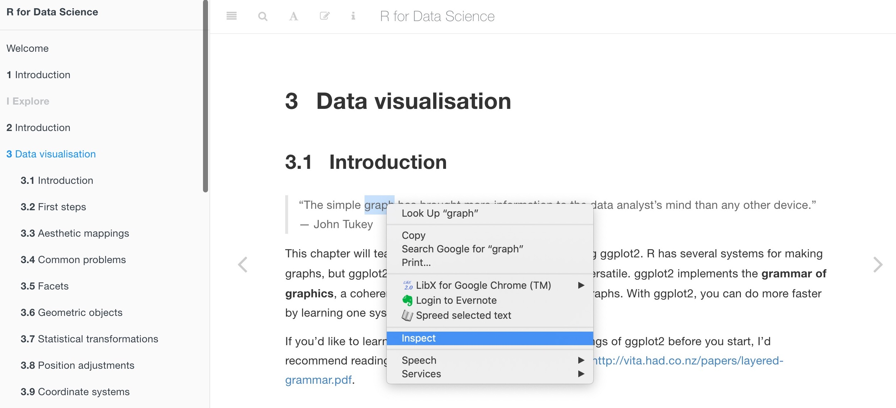
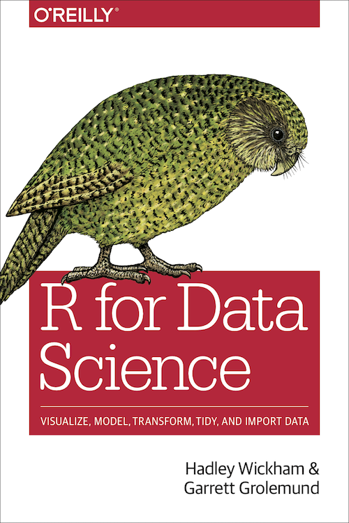

Functions for Lesson 10
read_html,html_node,html_attr
Packages for Lesson 10
rvest,xml2
Rather than pulling the entire webpage text, specify HTML elements (nodes), such as headings, tables, images to scrape.
Use html_node to get only the first HTML node and html_nodes to pull all elements. This is useful when you want to get all text or data within a table, just then only want the first row, for example.
require(rvest)
require(xml2)
url <- "https://r4ds.had.co.nz/data-visualisation.html" # url to scrape
url %>% read_html # scrape HTML text and data{html_document}
<html lang="" xml:lang="">
[1] <head>\n<meta http-equiv="Content-Type" content="text/html; charset=UTF-8">\n<meta charset="u ...
[2] <body>\n\n\n\n <div class="book without-animation with-summary font-size-2 font-family-1" da ...# scraping the first node only for third order headings ('h3')
url %>% read_html %>% html_node("h3") # get section headings{html_node}
<h3>
[1] <span class="header-section-number">3.1.1</span># scraping all nodes in the webpage
url %>% read_html %>% html_nodes("h3") # get section headings{xml_nodeset (11)}
[1] <h3>\n<span class="header-section-number">3.1.1</span> Prerequisites</h3>
[2] <h3>\n<span class="header-section-number">3.2.1</span> The <code>mpg</code> data frame</h3>
[3] <h3>\n<span class="header-section-number">3.2.2</span> Creating a ggplot</h3>
[4] <h3>\n<span class="header-section-number">3.2.3</span> A graphing template</h3>
[5] <h3>\n<span class="header-section-number">3.2.4</span> Exercises</h3>
[6] <h3>\n<span class="header-section-number">3.3.1</span> Exercises</h3>
[7] <h3>\n<span class="header-section-number">3.5.1</span> Exercises</h3>
[8] <h3>\n<span class="header-section-number">3.6.1</span> Exercises</h3>
[9] <h3>\n<span class="header-section-number">3.7.1</span> Exercises</h3>
[10] <h3>\n<span class="header-section-number">3.8.1</span> Exercises</h3>
[11] <h3>\n<span class="header-section-number">3.9.1</span> Exercises</h3>url %>% read_html %>% html_nodes("img") # get just images{xml_nodeset (54)}
[1] <img src="https://d33wubrfki0l68.cloudfront.net/27f75d757f210f2106c34e399f5d32b667a653f8/060 ...
[2] <img src="https://d33wubrfki0l68.cloudfront.net/75fb0e8e533675ad76f647b02be462f7cfd2f1df/b76 ...
[3] <img src="https://d33wubrfki0l68.cloudfront.net/2f8f27c472d7df78486e248c40931019b286361b/32a ...
[4] <img src="https://d33wubrfki0l68.cloudfront.net/e86ceaf6b7f5dcad0bb0b7254f3270501dd60b50/333 ...
[5] <img src="https://d33wubrfki0l68.cloudfront.net/7c338de8653204508c18a0b5e6bf98f3f66de257/d18 ...
[6] <img src="https://d33wubrfki0l68.cloudfront.net/4bc3b12fc5298232b9209c6b85cebae664d7b2b0/e71 ...
[7] <img src="https://d33wubrfki0l68.cloudfront.net/aa31d29d26bad3c5377cc0132b7fa4b26308da88/604 ...
[8] <img src="https://d33wubrfki0l68.cloudfront.net/5bc19b1d6b8bb4c987c71c7128cb7b4cb5cb927a/9a5 ...
[9] <img src="https://d33wubrfki0l68.cloudfront.net/58a48d625b4bd494cd685dd9998f5c74e9c16907/211 ...
[10] <img src="https://d33wubrfki0l68.cloudfront.net/a5d53e34dd5b78eb6358b857db8037e4134ce1d7/33f ...
[11] <img src="https://d33wubrfki0l68.cloudfront.net/7b70e5c694d661644e49bcaa2fa8d923007cf718/b11 ...
[12] <img src="https://d33wubrfki0l68.cloudfront.net/94b029204c691b958eb0c60c6915a19ee4d319bf/cee ...
[13] <img src="https://d33wubrfki0l68.cloudfront.net/27f75d757f210f2106c34e399f5d32b667a653f8/78a ...
[14] <img src="https://d33wubrfki0l68.cloudfront.net/3e4d5a44b35d0de122c81319995d5dcf484e6d71/7fb ...
[15] <img src="https://d33wubrfki0l68.cloudfront.net/33b14521b673a6384c302e3df3008d1c3c034c6b/d32 ...
[16] <img src="https://d33wubrfki0l68.cloudfront.net/ef715987983fb850a25fda6cf2f13fbfb145949e/63c ...
[17] <img src="https://d33wubrfki0l68.cloudfront.net/4f68161679255e60089d8e7453623f9d347b6b77/be8 ...
[18] <img src="https://d33wubrfki0l68.cloudfront.net/2cd610393a828d04520144a1ff8bf669d2b9d790/862 ...
[19] <img src="https://d33wubrfki0l68.cloudfront.net/6cb48f7f00aa119aab0db977306e6c0cd996a8d8/e4c ...
[20] <img src="https://d33wubrfki0l68.cloudfront.net/62d36d8b7ebbc5ef9e97d3365e201a687214345b/5fb ...
...Write a simple function to pull the HTML node you're interested in
node <- function(n) {
url %>% read_html %>% html_nodes(n) # get just tables
}Pull specific text, such as headings using HTML elements, i.e. <h1>, <img>, etc
node("h1") # get first order headings{xml_nodeset (2)}
[1] <h1>\n <i class="fa fa-circle-o-notch fa-spin"></i><a href="./">R for Data Science ...
[2] <h1>\n<span class="header-section-number">3</span> Data visualisation</h1># now pull just the text without the HTML elements
node("h2") %>% html_text(trim = T) [1] "3.1 Introduction" "3.2 First steps"
[3] "3.3 Aesthetic mappings" "3.4 Common problems"
[5] "3.5 Facets" "3.6 Geometric objects"
[7] "3.7 Statistical transformations" "3.8 Position adjustments"
[9] "3.9 Coordinate systems" "3.10 The layered grammar of graphics"node("strong") %>% html_text(trim = T) # get just bold text [1] "R for Data Science" "grammar of graphics" "data frame" "aesthetic"
[5] "scaling" "facets" "geoms" "geom"
[9] "stat" "position adjustment" "overplotting" Find and pull all unique R functions from the webpage and view the first 10 results
node("code") %>% html_text(trim = T) %>% unique %>% head(10) [1] "mpg"
[2] "filter()"
[3] "arrange()"
[4] "select()"
[5] "mutate()"
[6] "summarise()"
[7] "library(tidyverse)\n#> ── Attaching packages ─────────────────────────────────────── tidyverse 1.3.0 ──\n#> ✔ ggplot2 3.3.0 ✔ purrr 0.3.4\n#> ✔ tibble 3.0.1 ✔ dplyr 0.8.5\n#> ✔ tidyr 1.0.3 ✔ stringr 1.4.0\n#> ✔ readr 1.3.1 ✔ forcats 0.5.0\n#> ── Conflicts ────────────────────────────────────────── tidyverse_conflicts() ──\n#> ✖ dplyr::filter() masks stats::filter()\n#> ✖ dplyr::lag() masks stats::lag()"
[8] "library()"
[9] "install.packages(\"tidyverse\")\nlibrary(tidyverse)"
[10] "package::function()"
E.g. I want just the quotes from the page, but don't know what type of node they belong to. After inspecting the element, I can see it's called a 'blockquote'.

node("blockquote") %>% html_text(trim = T)[1] "“The simple graph has brought more information to the data analyst’s mind\nthan any other device.” — John Tukey"
[2] "“The greatest value of a picture is when it forces us to notice what we\nnever expected to see.” — John Tukey" Scrape table data
url <- "https://www.imdb.com/title/tt8515016/"
url %>% read_html %>% html_table(trim = T) # get just tables[[1]]
X1 X2 X3
1 Series cast summary: Series cast summary: Series cast summary:
2 Jun Fukuyama ...
3
4 Makoto Furukawa ...
5
6 Hiroaki Hirata ...
7
8 Yoshimasa Hosoya ...
9
10 Unshô Ishizuka ...
11
12 Shinji Kawada ...
13
14 Toshiyuki Morikawa ...
15
16 Kenji Nojima ...
17
18 Yuma Uchida ...
19
X4
1 Series cast summary:
2 Lee Yut Lung\n 24 episodes, 2018
3
4 Shorter Wong\n 24 episodes, 2018
5
6 Max Lobo\n 24 episodes, 2018
7
8 Frederick Arthur\n 24 episodes, 2018
9
10 Dino Golzine\n 24 episodes, 2018
11
12 Shunichi Ibe\n 24 episodes, 2018
13
14 Blanca\n 24 episodes, 2018
15
16 Eiji Okumura\n 24 episodes, 2018
17
18 Ash Lynx\n 24 episodes, 2018
19 Let's say you wanted to scrape all the urls within a webpage, but ignore the urls contained within some parts of the page, e.g. the sidebar or footer.
We can use html_attr() to identify nested elements within HTML elements.
This code scrapes the urls from the below webpage, but inclues all possible urls, which is not what we want.
url <- "https://r4ds.had.co.nz/index.html"
node("a"){xml_nodeset (568)}
[1] <a href="./">R for Data Science</a>
[2] <a href="index.html"><i class="fa fa-check"></i>Welcome</a>
[3] <a href="introduction.html"><i class="fa fa-check"></i><b>1</b> Introduction</a>
[4] <a href="introduction.html#what-you-will-learn"><i class="fa fa-check"></i><b>1.1</b> What y ...
[5] <a href="introduction.html#how-this-book-is-organised"><i class="fa fa-check"></i><b>1.2</b> ...
[6] <a href="introduction.html#what-you-wont-learn"><i class="fa fa-check"></i><b>1.3</b> What y ...
[7] <a href="introduction.html#big-data"><i class="fa fa-check"></i><b>1.3.1</b> Big data</a>
[8] <a href="introduction.html#python-julia-and-friends"><i class="fa fa-check"></i><b>1.3.2</b> ...
[9] <a href="introduction.html#non-rectangular-data"><i class="fa fa-check"></i><b>1.3.3</b> Non ...
[10] <a href="introduction.html#hypothesis-confirmation"><i class="fa fa-check"></i><b>1.3.4</b> ...
[11] <a href="introduction.html#prerequisites"><i class="fa fa-check"></i><b>1.4</b> Prerequisite ...
[12] <a href="introduction.html#r"><i class="fa fa-check"></i><b>1.4.1</b> R</a>
[13] <a href="introduction.html#rstudio"><i class="fa fa-check"></i><b>1.4.2</b> RStudio</a>
[14] <a href="introduction.html#the-tidyverse"><i class="fa fa-check"></i><b>1.4.3</b> The tidyve ...
[15] <a href="introduction.html#other-packages"><i class="fa fa-check"></i><b>1.4.4</b> Other pac ...
[16] <a href="introduction.html#running-r-code"><i class="fa fa-check"></i><b>1.5</b> Running R c ...
[17] <a href="introduction.html#getting-help-and-learning-more"><i class="fa fa-check"></i><b>1.6 ...
[18] <a href="introduction.html#acknowledgements"><i class="fa fa-check"></i><b>1.7</b> Acknowled ...
[19] <a href="introduction.html#colophon"><i class="fa fa-check"></i><b>1.8</b> Colophon</a>
[20] <a href="explore-intro.html"><i class="fa fa-check"></i><b>2</b> Introduction</a>
...Specifying the main body of the webpage ("section") solves this, but we still want just the urls. Using html_attr() gives us just the url portion of the HTML link element (<a>)
node("section") %>% html_nodes("a") %>% html_attr("href") [1] "http://amzn.to/2aHLAQ1"
[2] "http://creativecommons.org/licenses/by-nc-nd/3.0/us/"
[3] "http://amzn.to/2aHLAQ1"
[4] "https://www.doc.govt.nz/kakapo-donate"
[5] "https://www.youtube.com/watch?v=9T1vfsHYiKY"
[6] "https://rmarkdown.rstudio.com"
[7] "https://bookdown.org"
[8] "https://github.com/hadley/r4ds"
[9] "http://travis-ci.org/"
[10] "https://github.com/adidoit"
[11] "https://github.com/agila5"
[12] "https://github.com/ajay-d"
[13] "https://github.com/AlanFeder"
[14] "https://github.com/alonzi"
[15] "https://github.com/ALShum"
[16] "https://github.com/andland"
[17] "https://github.com/andrewmacfarland"
[18] "https://github.com/aviast"
[19] "https://github.com/batpigandme"
[20] "https://github.com/bbrewington"
[21] "https://github.com/behrman"
[22] "https://github.com/benherbertson"
[23] "https://github.com/benmarwick"
[24] "https://github.com/bensteinberg"
[25] "https://github.com/bgreenwell"
[26] "https://github.com/bklamer"
[27] "https://github.com/chrMongeau"
[28] "https://github.com/coopermor"
[29] "https://github.com/csgillespie"
[30] "https://github.com/csrvermaak"
[31] "https://github.com/curious-abhinav"
[32] "https://github.com/curtisalexander"
[33] "https://github.com/cwarden"
[34] "https://github.com/darrkj"
[35] "https://github.com/davidrubinger"
[36] "https://github.com/DDClark"
[37] "https://github.com/derwinmcgeary"
[38] "https://github.com/dgromer"
[39] "https://github.com/djbirke"
[40] "https://github.com/dpastoor"
[41] "https://github.com/duju211"
[42] "https://github.com/dylancashman"
[43] "https://github.com/eddelbuettel"
[44] "https://github.com/EdwinTh"
[45] "https://github.com/elgabbas"
[46] "https://github.com/ericwatt"
[47] "https://github.com/erikerhardt"
[48] "https://github.com/etiennebr"
[49] "https://github.com/evjrob"
[50] "https://github.com/flemingspace"
[51] "https://github.com/florisvdh"
[52] "https://github.com/gadenbuie"
[53] "https://github.com/garrettgman"
[54] "https://github.com/GoldbergData"
[55] "https://github.com/gridgrad"
[56] "https://github.com/gustavdelius"
[57] "https://github.com/hadley"
[58] "https://github.com/hao-trivago"
[59] "https://github.com/harrismcgehee"
[60] "https://github.com/hengnicai"
[61] "https://github.com/iansealy"
[62] "https://github.com/ijlyttle"
[63] "https://github.com/ivan-krukov"
[64] "https://github.com/jacobkap"
[65] "https://github.com/jazzlw"
[66] "https://github.com/jdstorey"
[67] "https://github.com/jeffboichuk"
[68] "https://github.com/jefferis"
[69] "https://github.com/JeldorPKU"
[70] "https://github.com/jennybc"
[71] "https://github.com/jenren"
[72] "https://github.com/jeroenjanssens"
[73] "https://github.com/jimhester"
[74] "https://github.com/jjchern"
[75] "https://github.com/joannejang"
[76] "https://github.com/johnsears"
[77] "https://github.com/jonathanflint"
[78] "https://github.com/jonmcalder"
[79] "https://github.com/jonpage"
[80] "https://github.com/jpetuchovas"
[81] "https://github.com/jroberayalas"
[82] "https://github.com/jules32"
[83] "https://github.com/kaetschap"
[84] "https://github.com/karawoo"
[85] "https://github.com/katrinleinweber"
[86] "https://github.com/kdpsingh"
[87] "https://github.com/khumph"
[88] "https://github.com/kirillseva"
[89] "https://github.com/koalabearski"
[90] "https://github.com/krlmlr"
[91] "https://github.com/landesbergn"
[92] "https://github.com/lindbrook"
[93] "https://github.com/maurolepore"
[94] "https://github.com/mbeveridge"
[95] "https://github.com/mfherman"
[96] "https://github.com/mine-cetinkaya-rundel"
[97] "https://github.com/mjhendrickson"
[98] "https://github.com/MJMarshall"
[99] "https://github.com/mustafaascha"
[100] "https://github.com/nareal"
[101] "https://github.com/nate-d-olson"
[102] "https://github.com/nateaff"
[103] "https://github.com/nickclark1000"
[104] "https://github.com/nickelas"
[105] "https://github.com/nirmalpatel"
[106] "https://github.com/nmjakobsen"
[107] "https://github.com/Nowosad"
[108] "https://github.com/peterhurford"
[109] "https://github.com/pkq"
[110] "https://github.com/radugrosu"
[111] "https://github.com/Ranae"
[112] "https://github.com/rgertenbach"
[113] "https://github.com/rlzijdeman"
[114] "https://github.com/Robinlovelace"
[115] "https://github.com/robinsones"
[116] "https://github.com/RohanAlexander"
[117] "https://github.com/RomeroBarata"
[118] "https://github.com/rudeboybert"
[119] "https://github.com/saghirb"
[120] "https://github.com/sauercrowd"
[121] "https://github.com/schuess"
[122] "https://github.com/seamus-mckinsey"
[123] "https://github.com/seanpwilliams"
[124] "https://github.com/seasmith"
[125] "https://github.com/sedaghatfar"
[126] "https://github.com/sekR4"
[127] "https://github.com/sfirke"
[128] "https://github.com/ShanEllis"
[129] "https://github.com/shoili"
[130] "https://github.com/sibusiso16"
[131] "https://github.com/spirgel"
[132] "https://github.com/StevenMMortimer"
[133] "https://github.com/stragu"
[134] "https://github.com/svenski"
[135] "https://github.com/talgalili"
[136] "https://github.com/timwaterhouse"
[137] "https://github.com/tjmahr"
[138] "https://github.com/tklebel"
[139] "https://github.com/tomjamesprior"
[140] "https://github.com/tteo"
[141] "https://github.com/wibeasley"
[142] "https://github.com/yahwes"
[143] "https://github.com/yihui"
[144] "https://github.com/yimingli"
[145] "https://github.com/yutannihilation"
[146] "https://github.com/zeal626"
[147] "https://github.com/zo0z" If you wanted just the text associated with the links and not the link themselves, just pull the text instead of using html_attr()
node("section") %>% html_nodes("a") %>% html_text() [1] ""
[2] "Creative Commons Attribution-NonCommercial-NoDerivs 3.0"
[3] "amazon"
[4] "Kākāpō Recovery"
[5] "kākāpō"
[6] "RMarkdown"
[7] "bookdown"
[8] "source"
[9] "travis"
[10] "@adidoit"
[11] "@agila5"
[12] "@ajay-d"
[13] "@AlanFeder"
[14] "@alonzi"
[15] "@ALShum"
[16] "@andland"
[17] "@andrewmacfarland"
[18] "@aviast"
[19] "@batpigandme"
[20] "@bbrewington"
[21] "@behrman"
[22] "@benherbertson"
[23] "@benmarwick"
[24] "@bensteinberg"
[25] "@bgreenwell"
[26] "@bklamer"
[27] "@chrMongeau"
[28] "@coopermor"
[29] "@csgillespie"
[30] "@csrvermaak"
[31] "@curious-abhinav"
[32] "@curtisalexander"
[33] "@cwarden"
[34] "@darrkj"
[35] "@davidrubinger"
[36] "@DDClark"
[37] "@derwinmcgeary"
[38] "@dgromer"
[39] "@djbirke"
[40] "@dpastoor"
[41] "@duju211"
[42] "@dylancashman"
[43] "@eddelbuettel"
[44] "@EdwinTh"
[45] "@elgabbas"
[46] "@ericwatt"
[47] "@erikerhardt"
[48] "@etiennebr"
[49] "@evjrob"
[50] "@flemingspace"
[51] "@florisvdh"
[52] "@gadenbuie"
[53] "@garrettgman"
[54] "@GoldbergData"
[55] "@gridgrad"
[56] "@gustavdelius"
[57] "@hadley"
[58] "@hao-trivago"
[59] "@harrismcgehee"
[60] "@hengnicai"
[61] "@iansealy"
[62] "@ijlyttle"
[63] "@ivan-krukov"
[64] "@jacobkap"
[65] "@jazzlw"
[66] "@jdstorey"
[67] "@jeffboichuk"
[68] "@jefferis"
[69] "@JeldorPKU"
[70] "@jennybc"
[71] "@jenren"
[72] "@jeroenjanssens"
[73] "@jimhester"
[74] "@jjchern"
[75] "@joannejang"
[76] "@johnsears"
[77] "@jonathanflint"
[78] "@jonmcalder"
[79] "@jonpage"
[80] "@jpetuchovas"
[81] "@jroberayalas"
[82] "@jules32"
[83] "@kaetschap"
[84] "@karawoo"
[85] "@katrinleinweber"
[86] "@kdpsingh"
[87] "@khumph"
[88] "@kirillseva"
[89] "@koalabearski"
[90] "@krlmlr"
[91] "@landesbergn"
[92] "@lindbrook"
[93] "@maurolepore"
[94] "@mbeveridge"
[95] "@mfherman"
[96] "@mine-cetinkaya-rundel"
[97] "@mjhendrickson"
[98] "@MJMarshall"
[99] "@mustafaascha"
[100] "@nareal"
[101] "@nate-d-olson"
[102] "@nateaff"
[103] "@nickclark1000"
[104] "@nickelas"
[105] "@nirmalpatel"
[106] "@nmjakobsen"
[107] "@Nowosad"
[108] "@peterhurford"
[109] "@pkq"
[110] "@radugrosu"
[111] "@Ranae"
[112] "@rgertenbach"
[113] "@rlzijdeman"
[114] "@Robinlovelace"
[115] "@robinsones"
[116] "@RohanAlexander"
[117] "@RomeroBarata"
[118] "@rudeboybert"
[119] "@saghirb"
[120] "@sauercrowd"
[121] "@schuess"
[122] "@seamus-mckinsey"
[123] "@seanpwilliams"
[124] "@seasmith"
[125] "@sedaghatfar"
[126] "@sekR4"
[127] "@sfirke"
[128] "@ShanEllis"
[129] "@shoili"
[130] "@sibusiso16"
[131] "@spirgel"
[132] "@StevenMMortimer"
[133] "@stragu"
[134] "@svenski"
[135] "@talgalili"
[136] "@timwaterhouse"
[137] "@tjmahr"
[138] "@tklebel"
[139] "@tomjamesprior"
[140] "@tteo"
[141] "@wibeasley"
[142] "@yahwes"
[143] "@yihui"
[144] "@yimingli"
[145] "@yutannihilation"
[146] "@zeal626"
[147] "@zo0z" Pulling and plotting images straight from a webpage
require(magick)
node("img") %>% html_attr("src") %>% image_read()
Find and scrape in the image from the below url and plot it, all without leaving R or saving the img to your drive.
url <- "https://www.imdb.com/title/tt8515016/"